ԲՆՈՒԹԱԳԻՐ
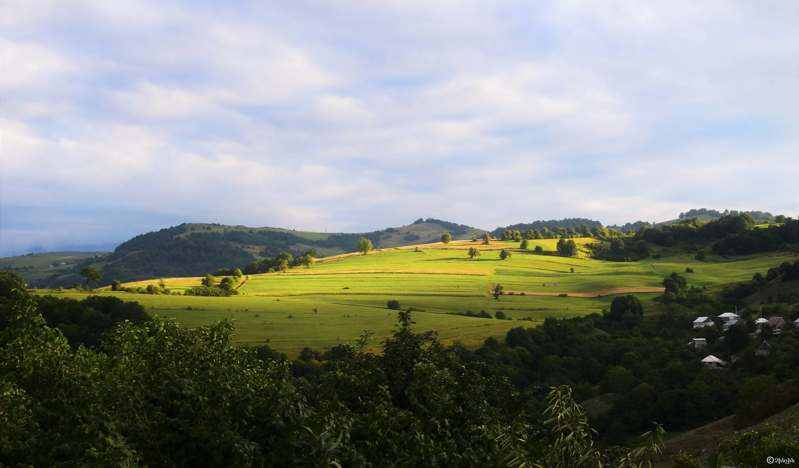
ՏՎՅԱԼՆԵՐ
Ուղղություն
Հյուսիսից
Արևմուտքից
Հարավ-արևմուտքից
Հարավից
Արևելքից
Սահմանակից մարզեր
–
Լոռի
Կոտայք
Գեղարքունիք
–
Հարևան երկրներ
Վրաստան
-
-
-
Ադրբեջան
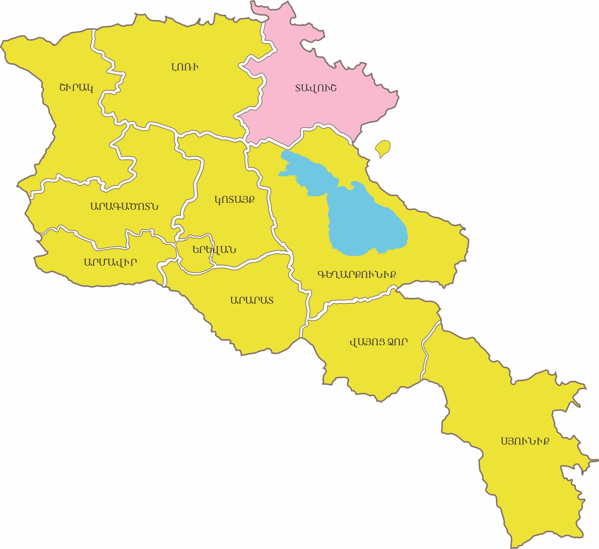
Հիմնադրումը
ՀՀ Տավուշի մարզը ստեղծվել է 1995 թ. դեկտեմբերի 5-ին։
Տարածքը
Արարատի մարզը զբաղեցնում է Հայաստանի ամբողջ տարածքի մոտ 9,1% -ը (2 704 կմ²)
Վարչական կենտրոնը
Իջևան քաղաք: Գտնվում է Աղստև գետի երկու ափերին՝ 730 մ. ծ.մ,բ., Երևանից՝ 133 կմ հյուսիս-արևելք, ՀՀ պետական սահմանից՝ 18 կմ-ի վրա: Քաղաքի կարգավիճակ՝1961-ից:Տարածքը Հայաստանի կազմում է հնադարից: Ուրարտական պետության կազմի մեջ՝ Երվանդունիների (մ.թ.ա. 570-201),Արտաշեսյանների (մ.թ.ա. 189-1) թագավորության օրոք։ Հետագայում՝ Մեծ Հայքի Գուգարք նահանգի Կայեն գավառում: 9-րդ դարի վերջից՝ Բագրատունյաց, 972-1113 թթ.՝ Տաշիր-Ձորագետի թագավորության, 1008-1490 թթ.- ին՝ Զաքարյանների իշխանապետության կազմում:
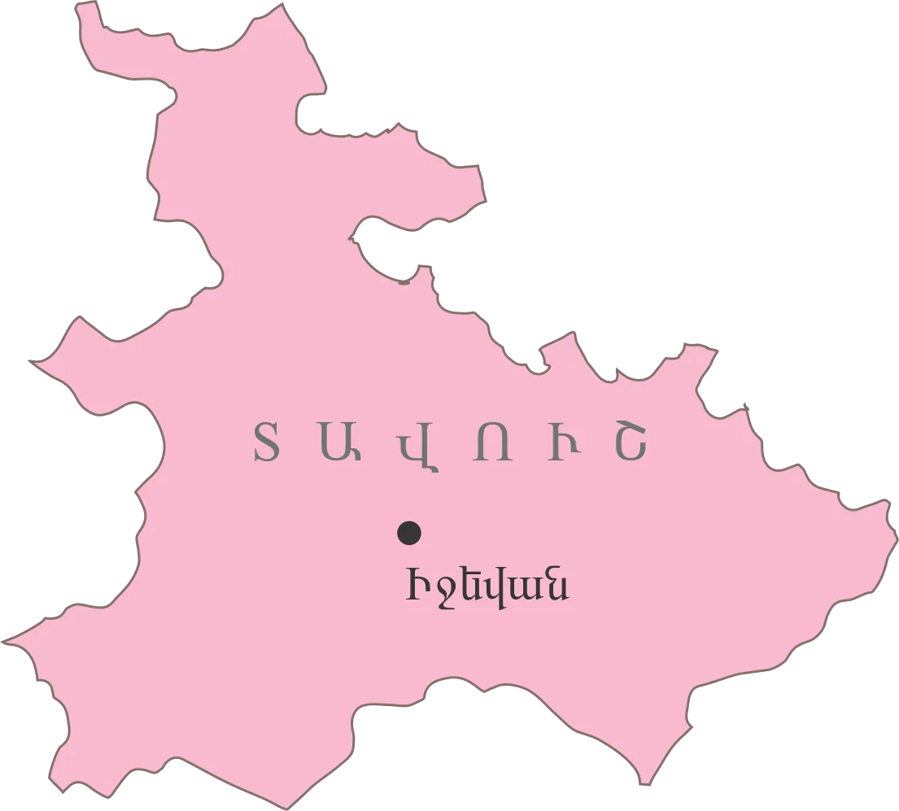
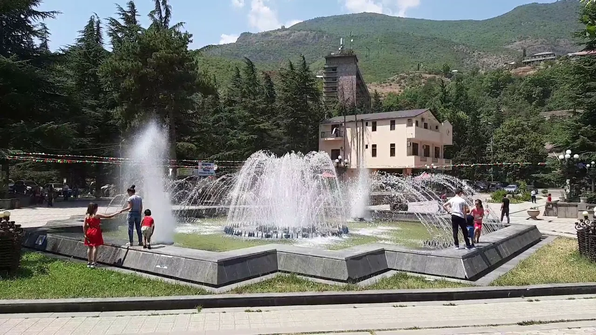
Ցուցիչ
Տարածք
Կոորդինատներ
Բարձրություն
Ամենաբարձր գագաթ
Ամենացածր կետ
Վարչական կենտրոն
Տարածաշրջաններ
Քաղաքներ
Գյուղեր
Բնակչություն
Հեռավորություն Երևանից
Փոստային կոդ
Թեժ գիծ
Վեբ կայք
Տվյալ
2704 կմ² (9,1% ՀՀ տարածքից)
40°25′ հս. լ. • 44°10′ ավ. ե.
միջին՝ 800–1700 մ, լեռնային՝ 2000–2500 մ
Մուրղուզ լեռ – 2993 մ
Դեբեդավան գյուղ – 375 մ
Իջևան
Իջևան, Դիլիջան, Նոյեմբերյան, Տավուշ
Իջևան, Դիլիջան, Նոյեմբերյան, Բերդ, Այրում
57
124,500 մարդ (4,2% ՀՀ, 2017թ.)
110 կմ
3901–4216
(+374 263) 4-23-56
www.tavushmarz.am
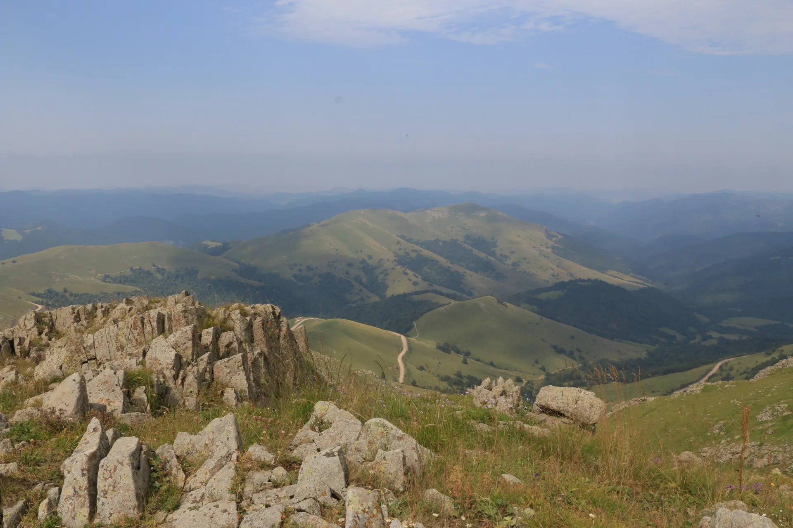
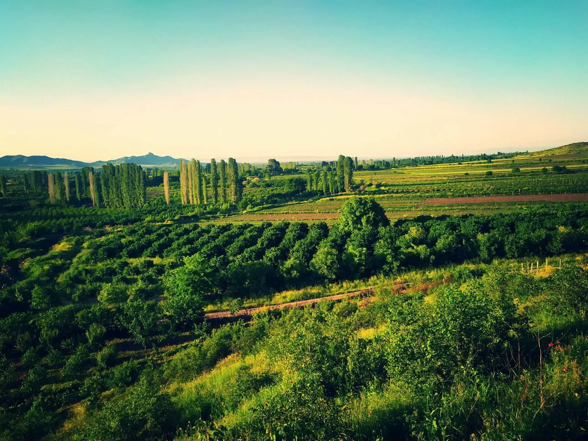
Ամենաբարձր գագաթ - Մուրղուզ լեռ – 2993 մ
Մարզային հեռախոսային կոդեր
Բնակավայր
Իջևան
Դիլիջան
Նոյեմբերյան
Բերդ
Այրում
Հաղարծին
Կողբ
Կոդ
263
268
266
267
—
268 95
266 5
Մարզպետարան/Կապ
Հասցե․ ք. Իջևան, Սահմանադրության հրապարակ
Վեբ կայք tavush.mtad.am
Էլ․ հասցե․ tavush@mta.gov.am
Հեռ./ֆաքս (+374 263) 3-23-56
-
-
-
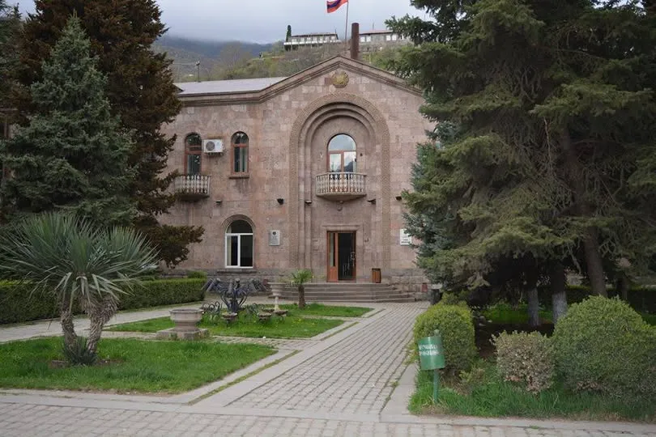
ԻՆՉՊԵՍ ՀԱՍՆԵԼ
Հայաստանի մայրաքաղաք Երևանից Տավուշի մարզ հասանում են հիմնականում Մ4 մայրուղով։ Ճանապարհը ավտոմեքենայով տևում է 2-3 ժամ՝ կախված Տավուշում գտնվող վայրի վերջնակետից։
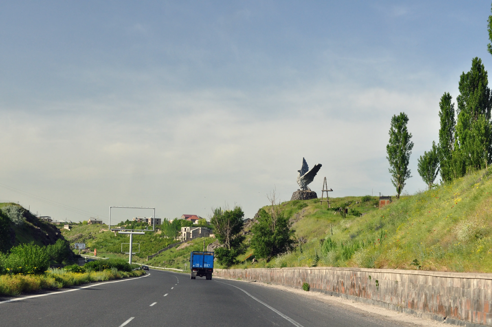
Ավտոմայրուղիներ
-
Մ4 մայրուղի – 148.2 կմ, կապում է Երևանը
Սևանի և Իջևանի հետ, շարունակվում է մինչև Հայաստան–Ադրբեջան
պետական սահման։
- Երևան → Սևան → Իջևան → դեպի ՀՀ-Ադրբեջան սահման Տավուշի կարևորագույն միջազգային կապող ճանապարհը
- Մ-16, /Մ-4/ – Ոսկեպար – Նոյեմբերյան – /Մ-6/ միջպետական նշանակության ավտոճանապարհի 7կմ հատվածը ձգվում է Տավուշի մարզի Իջևան քաղաքից մինչև Սարիգյուղ։
- Դիլիջան-Սևան ավտոմոբիլային թունելը Մ4 ճանապարհով միմյանց է կապում Տավուշի մարզի հարավ-արևմուտքը և Գեղարքունիքի մարզի հյուսիս-արևելքը:
- Երևան – Իջևան հեռավորությունը – մոտ 130 կմ։
- Երևան – Դիլիջան հեռավորությունը – մոտ 96 կմ։
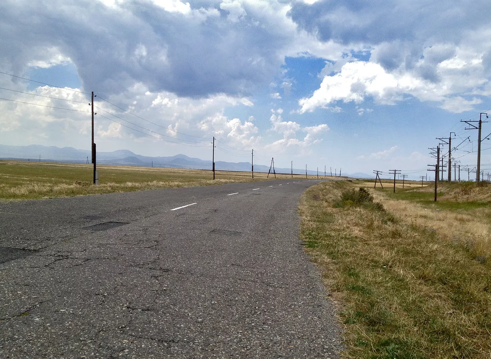
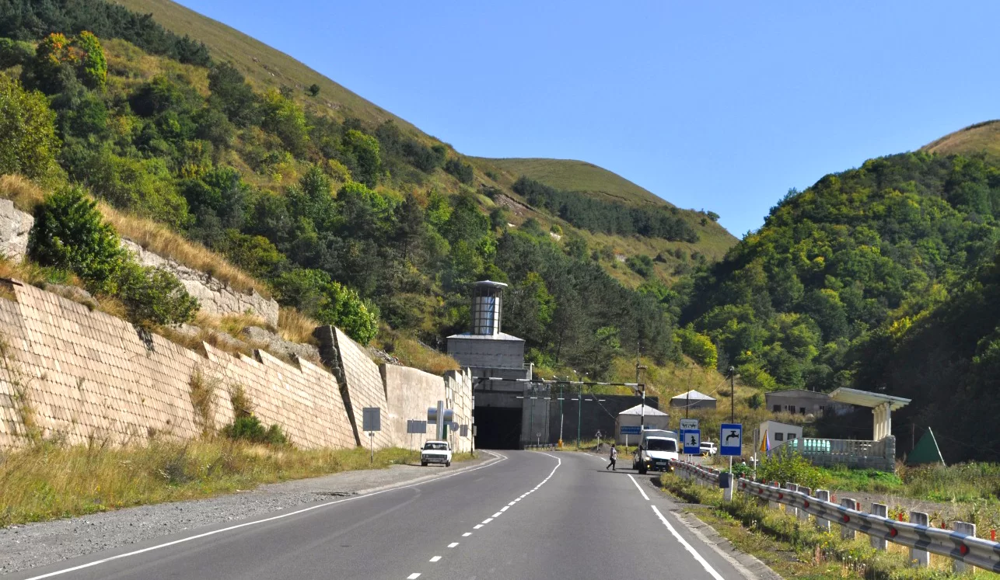
Ավտոբուս / Երթուղային
- Երևանից Իջևան ուղիղ երթուղիներ կան Հյուսիսային ավտոկայանից և Hayrenik Tour գրասենյակից։
- Ճանապարհի տևողությունը՝ մոտ 2 ժ 15 ր․
- Տոմսի արժեքը՝ 1500 դրամ։
-
Երթուղայիններ՝
- N651 – Երևան – Դիլիջան
- N654 – Երևան – Իջևան
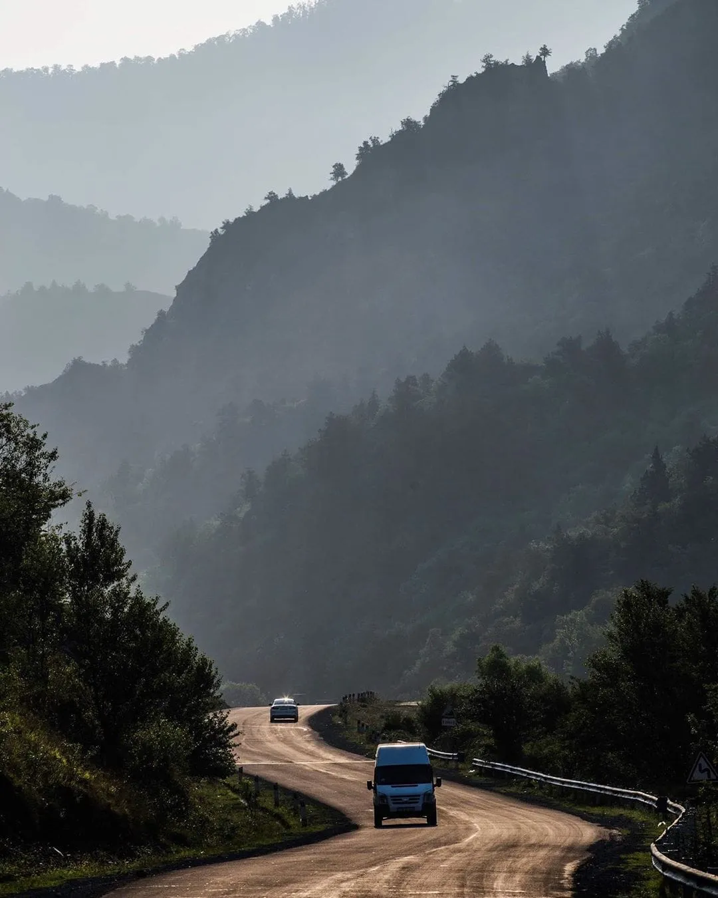
Տաքսի
- Տավուշում տաքսիներ շատ են։
- Գին․ 100 դրամ/կմ, նվազագույն նստելավարձ՝ 400 դրամ։
- Ավտոմեքենաներ կարելի է գտնել խաչմերուկներում և մարդաշատ վայրերում։
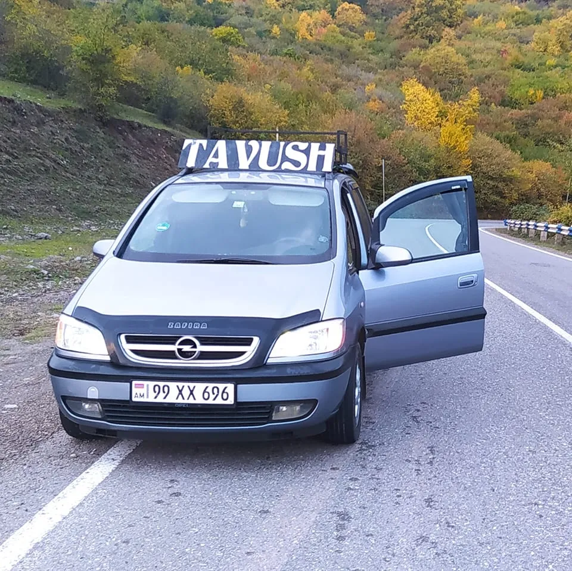
Ժամանակացույց
- Իջևան ⇄ Երևան
- Իջևանից → Երևան․ 09:00, 10:00, 12:00, 14:00, 15:30, 17:00
- Երևանից → Իջևան․ 09:00, 10:00, 12:00, 14:00, 16:00, 17:30
- Իջևան ⇄ Վանաձոր
- Իջևանից → Վանաձոր․ 11:00, 15:00, 17:00
- Վանաձորից → Իջևան․ 08:30, 10:30, 14:30
Երկաթուղի
Տավուշի մարզի արևմտյան սահմանի երկայնքով, Դեբեդ գետի ափով անցնում է Երևան-Թբիլիսի երկաթուղու 7 կմ-ոց հատվածը, սակայն ներկայումս մարզում երկաթուղային կայարան չի գործում:
Ինչպես հասնել Երևանից Իջևան
- Երևանից մեկնարկ – Հյուսիսային ավտոկայան կամ «Hayrenik Tour» գրասենյակ։
- Դուրս գալ Մ4 միջպետական մայրուղիով (Երևան – Սևան – Իջևան ճանապարհ)։
- Երևան → Սևան – մոտ 65 կմ․ անցնում եք Սևանի թերակղզու և լճի ափամերձ հատվածով։
- Սևան → Դիլիջան – շարունակել Մ4-ով դեպի հյուսիս-արևելք․ ճանապարհը անցնում է Դիլիջանի թունելով (մոտ 2.3 կմ) և մտնում է Դիլիջանի ազգային պարկ։
- Դիլիջան → Իջևան – Մ4 մայրուղին շարունակվում է դեպի հյուսիս, անցնելով անտառապատ լեռնաշղթաներով և գյուղերով։
- Իջևան – մարզկենտրոնը գտնվում է Երևանից մոտ 130 կմ հեռավորության վրա, ճանապարհը տևում է միջինը 2 ժամ 15 րոպե։
Ամենօրյա ուղևորափոխադրումներ՝ Երևան-Իջևան-Նոյեմբերյան
098 427 652
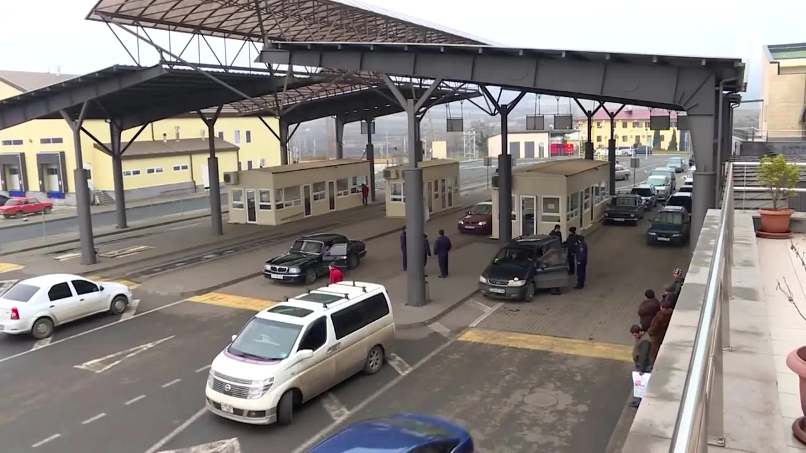
Ինչպես հասնել Երևանից Դիլիջան
Հեռավորություն: ~100 կմ
Ճանապարհի տևողություն: 1.5–2 ժամ մեքենայով, 2–2.5 ժամ հասարակական տրանսպորտով (կախված պայմաններից) Երթուղի՝ Մ-4 Երևան → Սևան → Իջևան → Դիլիջան
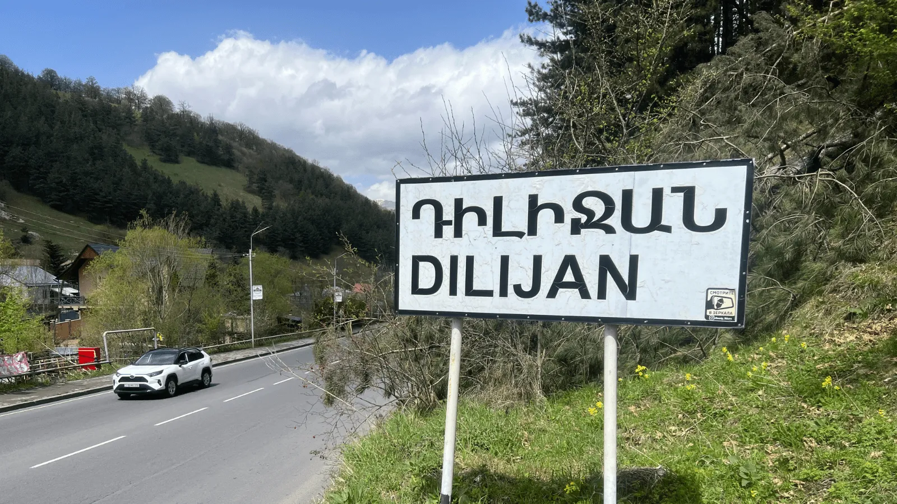
Մեքենա
- Սևանա լճից հետո ճանապարհը անցնում է գեղատեսիլ Սևանի լեռնանցքով, բացվում են գեղեցիկ տեսարաններ դեպի լեռները և անտառները։
- Ճանապարհը հիմնականում լավ վիճակում է, բայց լեռնային հատվածներում պետք է զգույշ լինել, հատկապես խոնավ եղանակին։
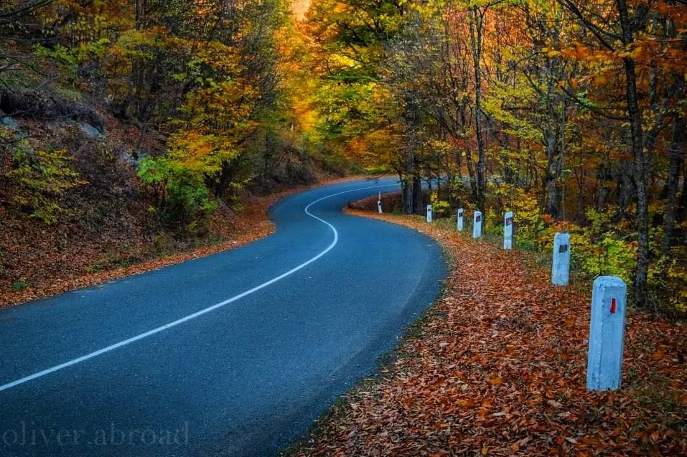
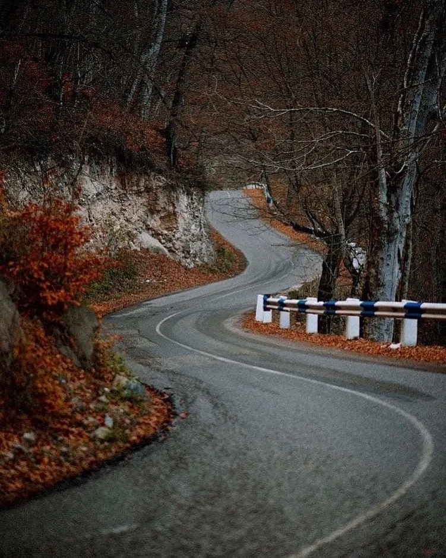
Հասարակական տրանսպորտ
- Երևանից՝ «Հյուսիսային ավտոկայան» → Դիլիջան
- Ճանապարհի տևողությունը՝ մոտ 2–2.5 ժամ
- Բոնուսներ․ արժեքը՝ 1,500–2,000 դրամ (2,5–5 եվրո)
- Օգտվել նաև առցանց ծառայություններից՝ GG Shuttle, Poputi
- Ժամանակացույցը նախապես ճշտել
Տաքսի
- Երևանից Դիլիջան տաքսիով՝ 10,000–15,000 դրամ (23–34 եվրո)
- Հարմար է նրանց համար, ովքեր գնահատում են հարմարավետությունն ու արագությունը
- Խորհուրդ է տրվում օգտագործել YandexGo հավելվածը
Միկրոավտոբուսներ (7+)
- Վարորդները վերցնում են ուղևորներին՝ յուրաքանչյուր անձի համար մոտ 2,000–2,500 դրամ
- Վարորդներին գտնել տեղական չաթերում կամ առցանց խմբերում
Ամենօրյա բարձակարգ ուղևորափոխադրումներ՝ Երևան-Դիլիջան
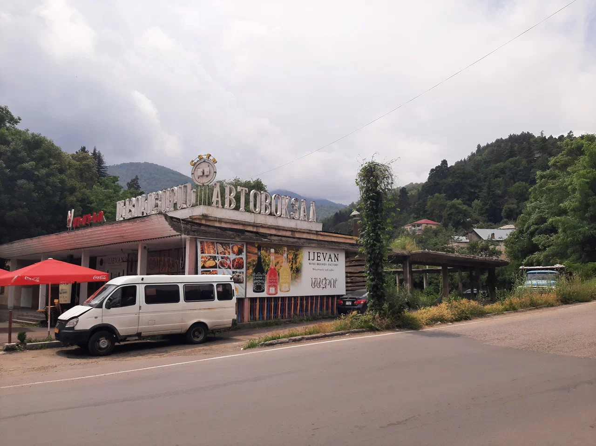
099 756 047, 094 627 454
ԿԼԻՄԱ
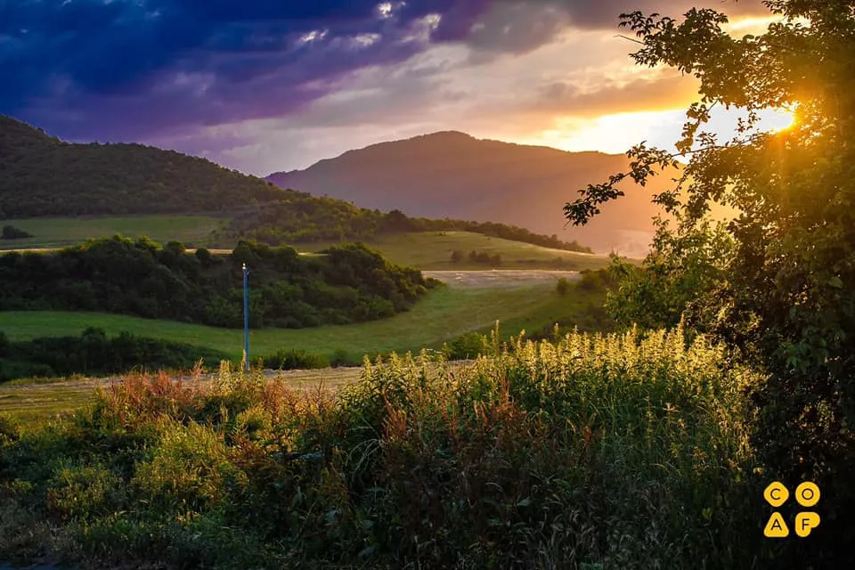
Տավուշի մարզը գտնվում է Հայկական լեռնաշխարհի հյուսիսում՝ շրջապատված միջին բարձրության լեռնաշղթաներով։ Բարձրությունը հիմնականում 800–1700 մ, բարձրադիր տարածքները՝ մինչև 2000–2500 մ։ Մարզում առանձնանում են 5 լանդշաֆտային գոտիներ – հետանտառային, անտառային, մարգագետնատափաստանային, մերձալպյան և ալպյան։ Տարածքի մեծ մասը անտառապատ է, իսկ բարձր լեռնալանջերը ծածկված են ալպիական մարգագետիններով։
Կլիմայի առանձնահատկություններ
- Մարզը գտնվում է չափավոր խոնավ գոտում։
- Աղստևի հովիտն ու Դիլիջանի գոգավորությունը առանձնանում են առողջարար միկրոկլիմայով․ մաքուր լեռնային օդ, հանքային ջրեր, անտառներ։
- Տարածքում երբեմն լինում են կարկտահարություն (միջինում 2–4 օր, առավելապես Դիլիջանում ) և ամպրոպներ (20–40 օր)։
- Բնորոշ են մառախուղները, որոնք հիմնականում լինում են ձմռանը։
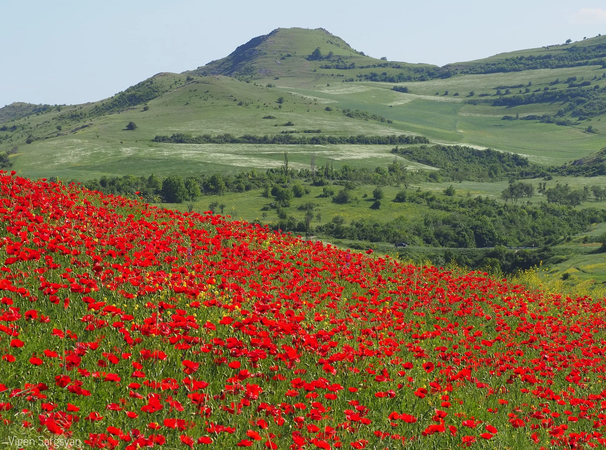
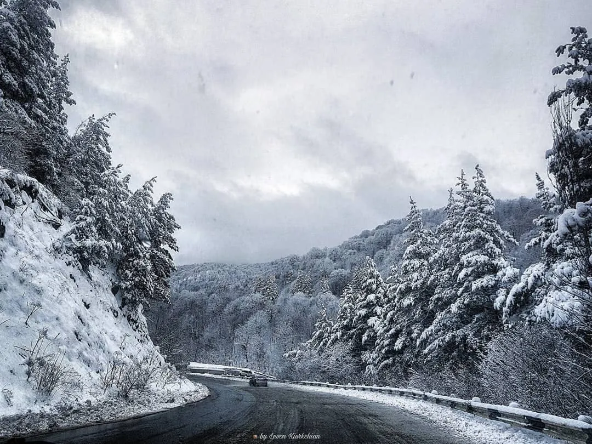
Եղանակների բնութագիր
Ձմեռ - մեղմ, սակավաձյուն, միջին ջերմաստիճանը շուրջ 0°C, սակայն կայուն ձնածածկույթը միշտ չէ։
Գարուն – տևական է, խոնավ և անձրևոտ, ցրտահարությունները հաճախ են, տեղումների մեծ մասը գրանցվում է ապրիլ–հունիսին։
Ամառ - տաք, բայց ոչ ծայրահեղ շոգ․ միջինը +21…+23°C, երբեմն հասնում է մինչև +40°C։
Աշուն – տաք ու արևոտ, համեմատաբար չոր, երկարատև «ոսկե աշուն»։
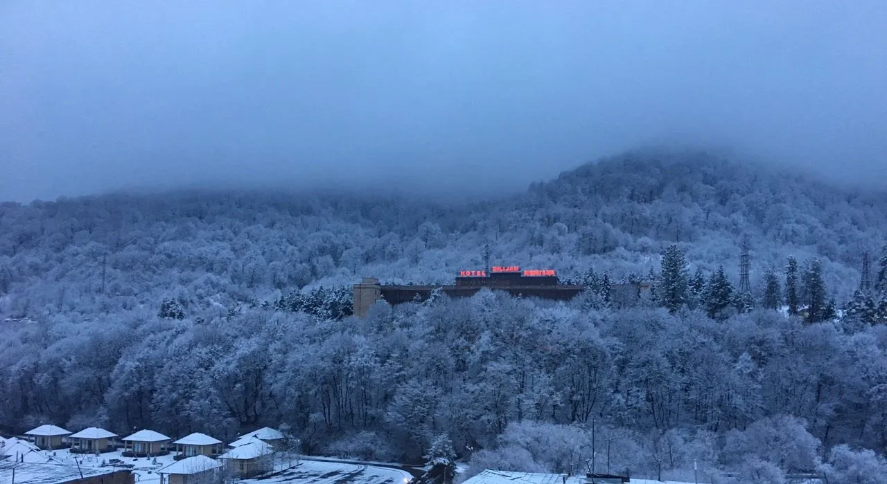
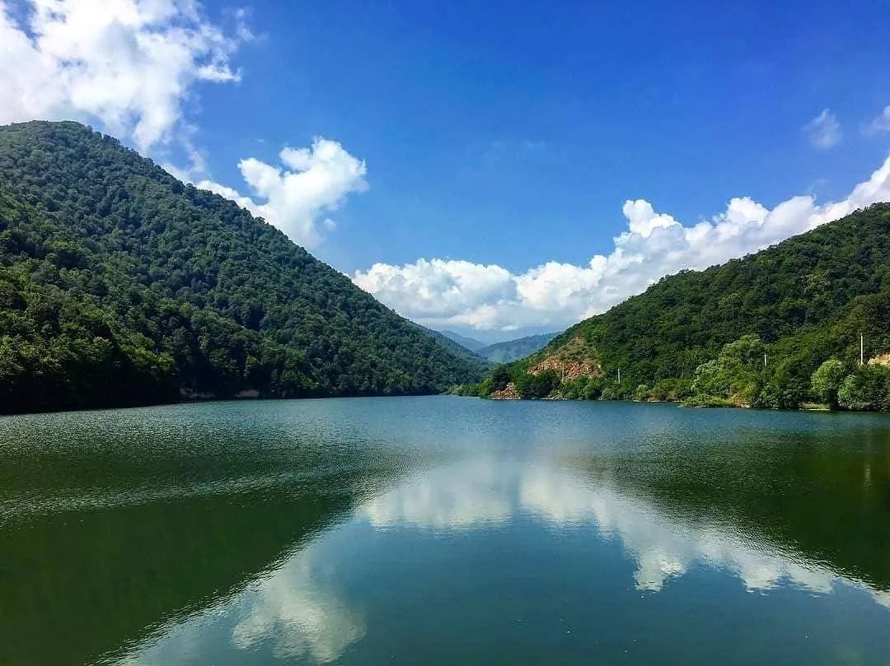
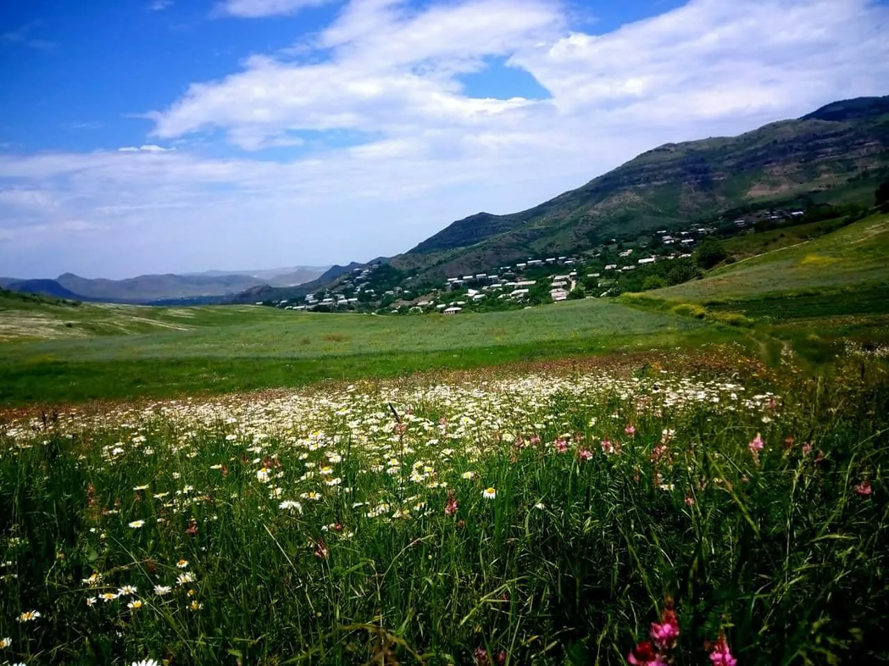
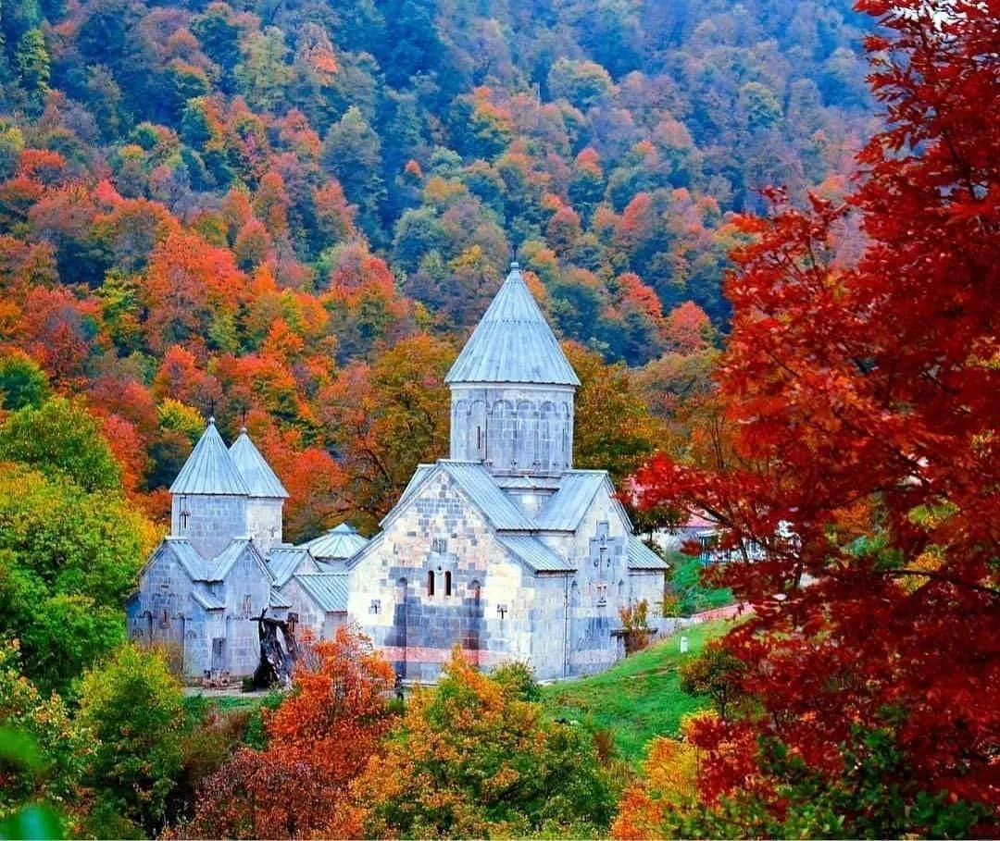
Ջերմաստիճան
- Կլիման մեղմ է․ ամառը չափավոր տաք, ձմեռը՝ ոչ սաստիկ։
- Օգոստոսի միջին ջերմաստիճանը՝ +21…+23°C, առավելագույնը՝ մինչև +42°C։
- Հունվարի միջինը՝ 0°C, նվազագույնը՝ մինչև -23°C։
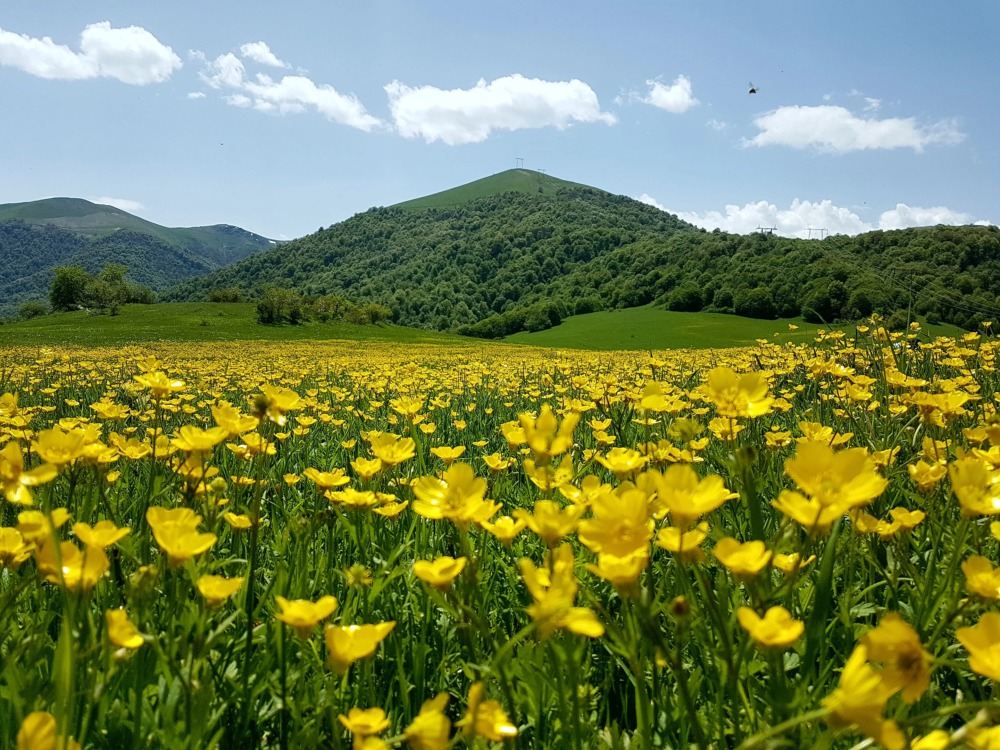
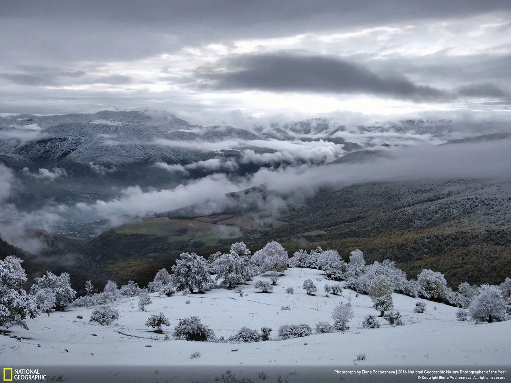
Տեղումներ
- Տարեկան տեղումները՝ 500–600 մմ։
- Ամենաանձրևոտ շրջանը՝ գարուն և ամռան սկիզբ (ապրիլ–հունիս)։
- Ձյունն ու ձնածածկույթը հաճախ չեն, մառախուղները՝ հաճախակի:
Քամիներ
- Հյուսիսում հաճախ դիտվում են ֆիոնատիպ տաք քամիներ, ինչի հետևանքով ձմեռները լինում են մեղմ և սակավաձյուն։
Արևափայլ
- Տարեկան արևափայլը՝ 1900–2100 ժամ։
- Ամպամած օրերը՝ շուրջ 110 օր, առավելագույնը՝ Դիլիջանում։
- Անարև օրերի թիվը՝ 65:
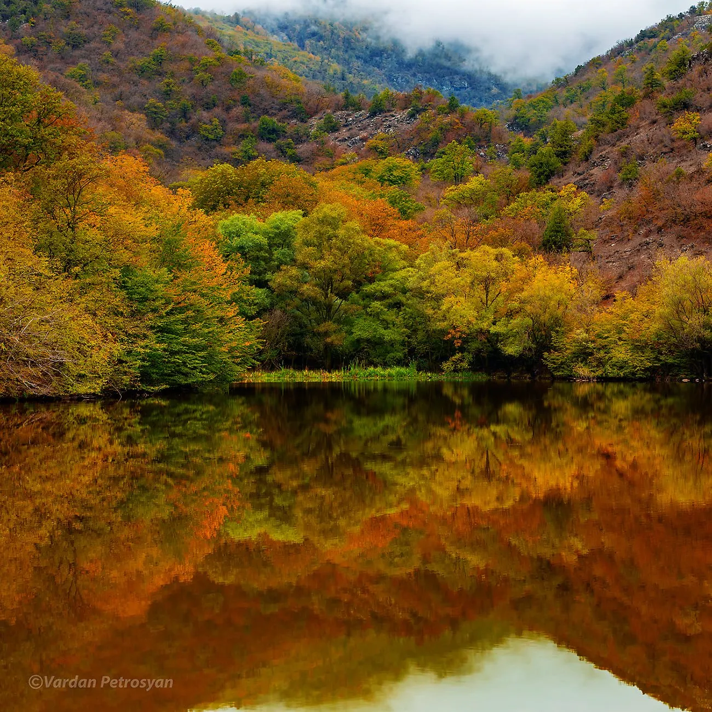
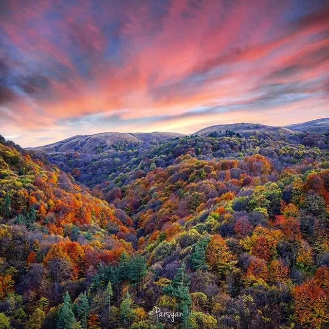